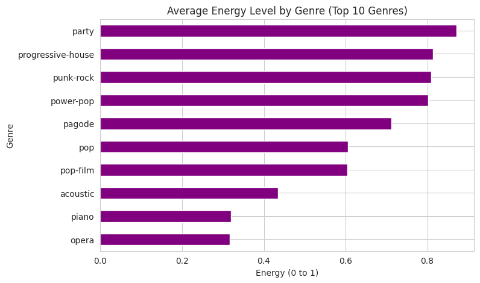
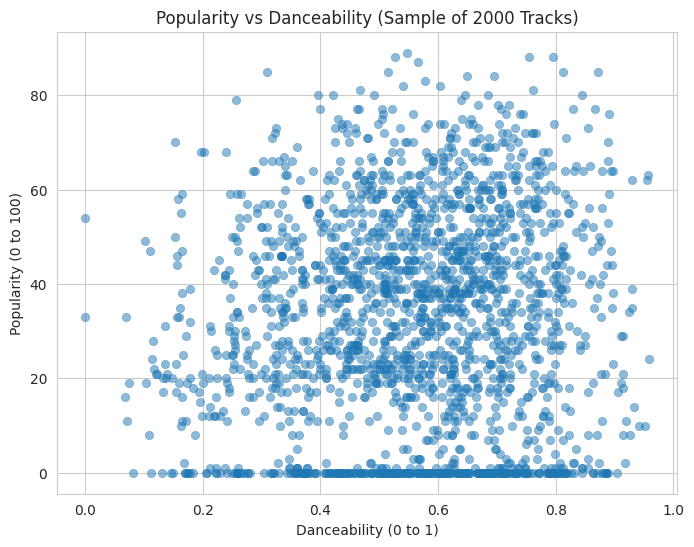
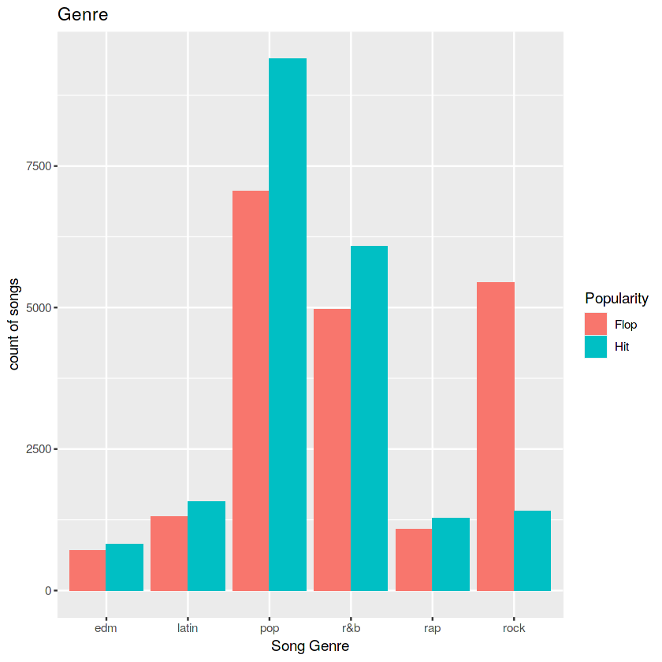
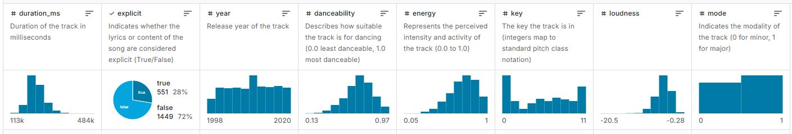

A0212-assignment project guide
Dataset investigation
Understand the source, structure, and limits.
Assignment brief
Know the evidence before you use it.
Investigate the Kaggle dataset’s origin, fields, format, and documentation. Record what the data can support, where it is incomplete, and which assumptions will shape the project.
Course · TECH*3745*01
Professor · Xiwang Guo
Preliminary visual evidence
First looks at
the dataset.



